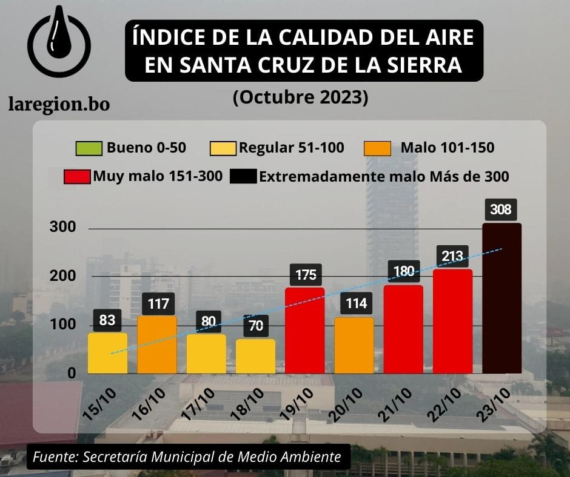
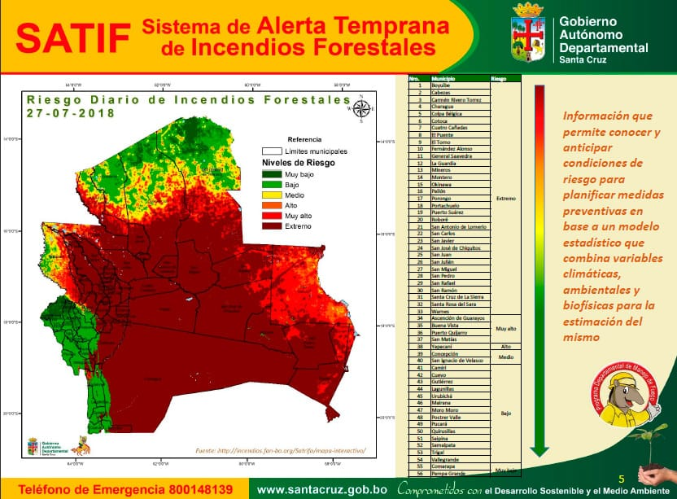

¿Cuáles son las consecuencias del chaqueo?
Pese a sus efectos contaminantes, esta práctica está vigente en el país y es una de las principales causantes de incendios forestales, la quema de pastizales, contamina el medio ambiente y hace que el país esté entre los principales del mundo en la producción de CO2 per cápita. Chaqueos destruyeron 35 millones de hectáreas de bosques en 15 años.

Entre el año 2000 y el 2015 en Bolivia se quemaron más de 35 millones de hectáreas de bosque. Según distintos documentos y opinión experta, gran parte de esos focos de calor se debe al chaqueo para actividades agropecuarias. En la actualidad existen al menos cuatro alternativas –manejo sostenible de pastizales, uso de leguminosas, sistemas agroforestales y producción integrada de la propiedad rural– en vez del uso del fuego para mejorar las condiciones de los suelos.
Daños a las comunidades por el chaqueo
Los daños del chaqueo pueden pasar a ser más de una molestia por la suciedad y residuos que deja como la ceniza, humo entre otros puede ser perjudicial para la salud dañando tus pulmones o de los menores del hogar; Las altas concentraciones de humo pueden desencadenar una serie de síntomas. Cualquiera puede experimentar ardor en los ojos, goteo nasal, tos, flema, sibilancia y dificultad para respirar. Si padece enfermedad cardíaca o pulmonar, el humo puede empeorar los síntomas. Posibles micro incendios, daños a platas, arboles, cultivos, etc.

Daños al medio ambiente
Más de 350 mil hectáreas por año son devastadas en Bolivia como resultado de los chaqueos entre los meses de junio y octubre, provocando “una degradación violenta de la vida”, según datos revelados por el coordinador de la Unidad
El chaqueo es uno de los determinantes para que Cochabamba sea hoy la ciudad más contaminada del país, según el informe del Ministerio de Medio Ambiente y Aguas.
El 92% o de los más de 27 mil focos de calor son registrados en los meses de agosto, septiembre y octubre, según datos del ex Ministerio de Asuntos Campesinos y Agropecuarios.